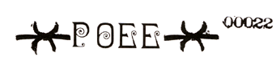

POEE (pronounced "POEE") is an acronym for The PARATHEO-ANAMETAMYSTIKHOOD OF ERIS ESOTERIC. The first part can be taken to mean "equivalent deity, reversity beyond-mystique." We are not really esoteric, it's just that nobody pays much attention to us.
MY HIGH REVERENCE MALACLYPSE THE YOUNGER, AB, DD, KSC, is the High Priest of POEE, and POEE is grounded in her episkopotic revelations of The Goddess. He is called [The Omnibenevolent Polyfounder of Virginity in Gold].
The POEE HEAD TEMPLE is the Joshua Norton Cabal of The Discordian Society, which is located in Mal-2's pineal gland and can be found by temporally and spacially locating the rest of Mal-2.
POEE has no treasury, no by-laws, no articles, no guides save Mal-2's pineal gland, and has only one scruple--which Mal-2 keeps on his key chain.
POEE has not registered, incorporated, or otherwise chartered with the State, and so the State does not recognize POEE or POEE Ordinations, which is only fair, because POEE does not recognize the State.
POEE has 5 DEGREES:
 There is the neophyte, or LEGIONNAIRE DISCIPLE.
There is the neophyte, or LEGIONNAIRE DISCIPLE.
The LEGIONNAIRE DEACON, who is catching on.
An Ordained POEE PRIEST/PRIESTESS or a CHAPLIN.
The HIGH PRIEST, the Polyfounder.
And POEE =POPE=.
POEE LEGIONNAIRE DISCIPLES are authorized to initiate others as Discordian Society Legionnaires. PRIESTS appoint their own DEACONS. The POLYFOUNDER ordains priests. I don't know about the =POPES=.